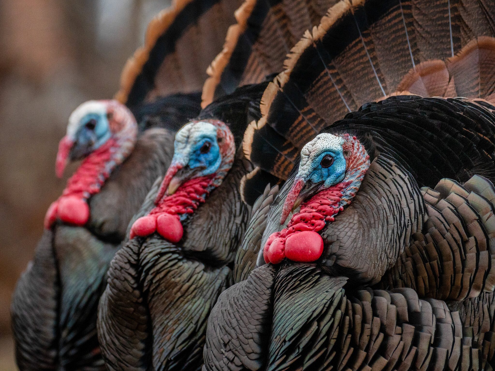

The Big Game Bird: Omnivores
A Diverse Diet of Plants and Seeds
Turkeys are omnivorous birds, meaning they consume a diverse diet that includes both plant and animal matter. In the wild, turkeys forage for a variety of foods, adapting their diet to the seasons and what is available in their habitat. They eat seeds, nuts, berries, and fruits, which provide essential nutrients and energy. Additionally, they consume green vegetation such as leaves and grasses, ensuring a balanced intake of fiber and vitamins. This plant-based portion of their diet plays a significant role in their overall health, helping them maintain their strength and vitality.
Protein from Insects and Small Creatures
Beyond plant matter, turkeys also rely on animal-based food sources to meet their dietary needs. They actively hunt and consume small insects, spiders, and worms, which provide valuable protein and fats necessary for growth and development. Insects like beetles, grasshoppers, and caterpillars make up a significant part of their diet, especially during the warmer months when these food sources are abundant. Turkeys may also eat small amphibians and reptiles if the opportunity arises, further demonstrating their adaptability as omnivores. This varied diet helps them thrive in different environments, from forests and grasslands to farmlands and suburban areas.
The Advantage of an Omnivorous Diet
The omnivorous nature of turkeys gives them an advantage when it comes to survival, as they are not limited to a single food source. Their ability to consume both plant and animal materials allows them to adjust to seasonal changes and food availability. This dietary flexibility is one of the reasons turkeys have successfully adapted to a wide range of habitats across North America. Whether in the wild or on farms, their varied diet supports their growth, reproduction, and overall well-being. By foraging on diverse food sources, turkeys maintain a well-rounded and nutrient-rich diet that contributes to their resilience and survival in the wild.